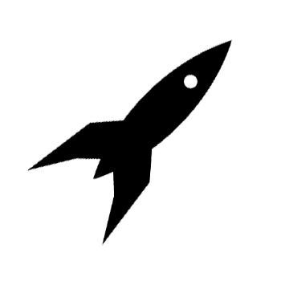

Notre histoire
Découvrez qui nous sommes et quelles sont les valeurs du groupe Space Odyssey
Nos partenaires

Retrouvez nos compagnons de voyage et partenaires commerciaux
Nos engagements

Découvrez nos engagements vis-à-vis de la nature et de vous-même